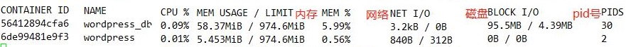

资源控制
默认情况，在Docker容器中没有任何资源限制
可以从名称空间(namespace)和控制组(cgroups)两个维度来定义
Cgroup是Control group的简写，是Linux内核提供的一种限制所使用物理资源的机制，这些资源主要包括CPU、内存、blkio
Cgroup配置文件为/sys/fs/cgroup/
memory
OOME：如果Linux内核探测到当前宿主机已经没有足够内存可用，用于实现执行某些重要的系统功能，它会抛出一个异常，并且开始启动去killing某些进程来释放内存
一旦发生OOME，任何进程都有可能被杀死，包括docker daemon在内
使用docker run -m 命令来限制单个容器内存使用量
内存限制配置文件 memory.limit_in_bytes
echo 512M > memory.limit_in_bytes
注意：
1.一旦容器Cgroup使用超过内存限制的容量，Linux内核将会尝试收回这些内存，
2.但进程不会被kill掉，因为内核会尝试将物理内存中的数据移动到swap空间中，从而让内存分配成功
3.设置的limit过小，或者swap空间不足，进程就会被杀死
触发控制
配置文件 memory.oom_control
当物理内存达到上限后，系统的默认行为是kill掉cgroup中继续申请内存的进程
如果写1到这个文件，表示不启动OOM-killer，当内核无法给进程分配足够的内存时，将会暂停该进程直到有空余的内存之后再继续运行；同时，memory.oom_control还包含一个只读的under_oom字段，用来表示当前是否已经进入oom状态，也即是否有进程被暂停了。
https://segmentfault.com/a/1190000008125359
CPU
默认设置每个容器可以使用宿主机的所有CPU资源
--cpu cpu数量
--cpuset-cpus选项来世某个程序独享CPU内核以便提高处理速度，
--cpu-share选项设置CPU按比例共享CPU资源权重 ,默认值为 1024
--cpu-quota选项来限制CPU使用速率，CPU的百分比是以1000为单位
对应的Cgroup配置文件为/sys/fs/cgroup/cpuset/docker
容器编号cpuset.cpus。选项后面直接跟参数0，1，2...表示第一个内核，第二个内核，第三个内核
如果服务器有16个核心，那么CPU编号为0~15，是容器绑定1~4个内核使用
docker run -d --cpuset-cpus 0,1,2,3 容器名
注意：
cgroup 只能限制 CPU 的使用，而不能保证CPU的使用。
cpuset-cpus，可以让容器在指定的CPU或者核上运行，但是不能确保它独占这些CPU；
cpu-shares 是个相对值，只有在CPU不够用的时候才其作用。，
当CPU够用的时候，每个容器会分到足够的CPU；不够用的时候，会按照指定的比重在多个容器之间分配CPU。
blkio
一台服务器上进行容器的混合部署，那么会出现有几个程序写入磁盘数据的情况
Block IO：指的是磁盘的读写，docker可以通过设置权重，限制bps和iops的方式控制容器读写磁盘的带宽
--blkio-weight，改变容器的优先级,weight的权重值在 10~1000之间
在资源紧张的情况下才会起到权重的作用，正常情况下，都是平等的
--device-write-iops：来限制写入iops，
--device-write-bps ： 限制写入某个设备的bps(数据量)
--device-write-iops ：限制写入某个设备的iops(次数)
--device-read-bps：可以限制读取iops。
但是这种方法只能针对blkio限制的设备，而不是分区。
Cgroup写配置文件/sys/fs/cgroup/blkio/docker/容器ID/blkio.write_iops_device
例如限制容器的/dev/sda1的写入iops为1MB
docker run --device-write-bps /dev/sda1:2mb 容器名
相关命令
Docker run --help
docker stats [container_name]
显示容器使用的系统资源

只返回当前的状态
--no-stream 不想持续的监控容器使用资源的情况，
docker stats --no-stream [container_name]
显示运行容器
docker stats $(docker ps --format={{.Names}})
定义输出的内容和格式
docker stats --format "table {{.Name}}\t{{.CPUPerc}}\t{{.MemUsage}}"
占位符：
.Container 根据用户指定的名称显示容器的名称或 ID。
.Name 容器名称。
.ID 容器 ID。
.CPUPerc CPU 使用率。
.MemUsage 内存使用量。
.NetIO 网络 I/O。
.BlockIO 磁盘 I/O。
.MemPerc 内存使用率。
.PIDs PID 号。
format 选项输出 json 格式的结果
docker stats --no-stream --format \
"{\"container\":\"{{ .Container }}\",\"memory\":{\"raw\":\"{{ .MemUsage }}\",\"percent\":\"{{ .MemPerc }}\"},\"cpu\":\"{{ .CPUPerc }}\"}"
docker top
docker top [OPTIONS] CONTAINER [ps OPTIONS]
查看容器中运行的进程信息
查看所有运行容器的进程信息
for i in `docker ps |grep Up|awk '{print $1}'`;do echo \ &&docker top $i; done